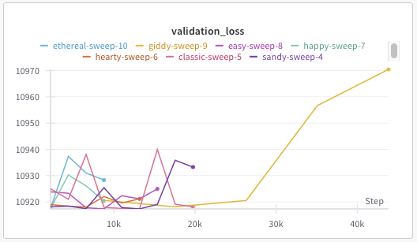
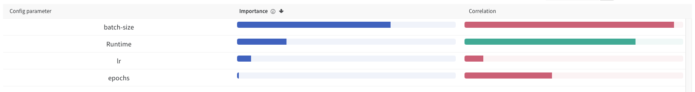
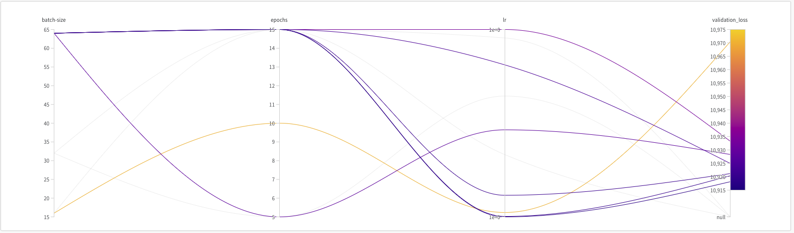
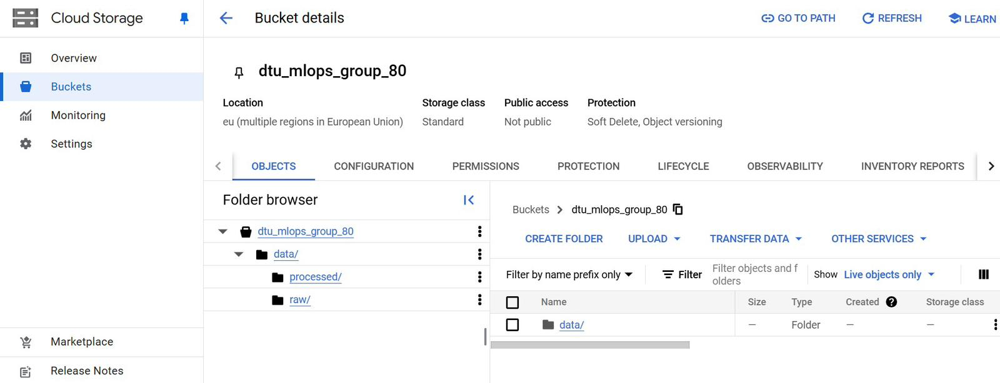
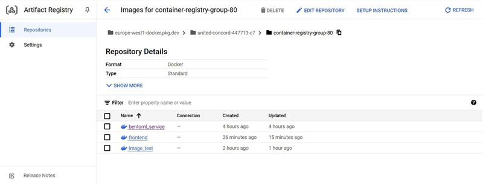
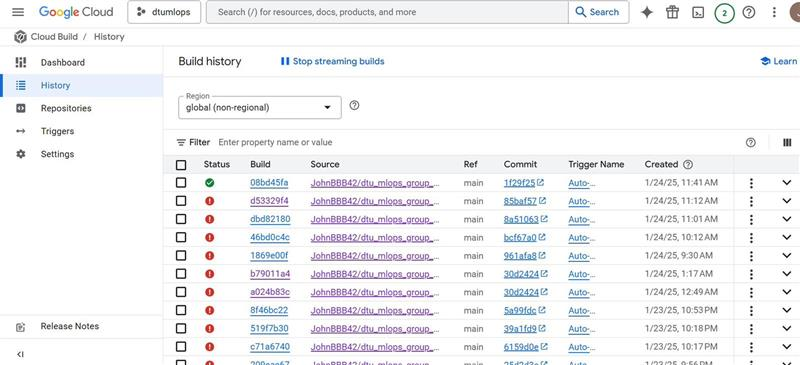
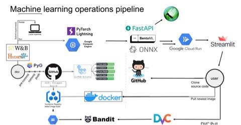

Operations
This is the report template for the exam. Please only remove the text formatted as with three dashes in front and behind like:
--- question 1 fill here ---
Where you instead should add your answers. Any other changes may have unwanted consequences when your report is
auto-generated at the end of the course. For questions where you are asked to include images, start by adding the image
to the figures subfolder (please only use .png, .jpg or .jpeg) and then add the following code in your answer:
markdown

In addition to this markdown file, we also provide the report.py script that provides two utility functions:
Running:
bash
python report.py html
Will generate a .html page of your report. After the deadline for answering this template, we will auto-scrape
everything in this reports folder and then use this utility to generate a .html page that will be your serve
as your final hand-in.
Running
bash
python report.py check
Will check your answers in this template against the constraints listed for each question e.g. is your answer too short, too long, or have you included an image when asked. For both functions to work you mustn't rename anything. The script has two dependencies that can be installed with
bash
pip install typer markdown
The checklist is exhaustive which means that it includes everything that you could do on the project included in the curriculum in this course. Therefore, we do not expect at all that you have checked all boxes at the end of the project. The parenthesis at the end indicates what module the bullet point is related to. Please be honest in your answers, we will check the repositories and the code to verify your answers.
data.py file such that it downloads whatever data you need and preprocesses it (if necessary) (M6)model.py and a training procedure to train.py and get that running (M6)requirements.txt and requirements_dev.txt file with whatever dependencies that you
are using (M2+M6)pep8) while doing the project (M7)Enter the group number you signed up on
Answer:
Group 80
Enter the study number for each member in the group
Example:
sXXXXXX, sXXXXXX, sXXXXXX
Answer:
232812, s244501, s232811
A requirement to the project is that you include a third-party package not covered in the course. What framework did you choose to work with and did it help you complete the project?
Recommended answer length: 100-200 words.
Example: We used the third-party framework ... in our project. We used functionality ... and functionality ... from the package to do ... and ... in our project.
Answer:
We used the third-party framework Bandit in our project. Bandit is a security linter designed to find common security issues in Python code. We utilized its code scanning functionality to automatically check our Python codebase for potential security vulnerabilities during our GitHub Actions workflow. Specifically, we implemented Bandit with the -r flag to recursively scan our source code directory. This automated security scanning helped ensure our code met basic security standards and identified potential risks before deployment. The integration with our CI/CD pipeline made security testing a seamless part of our development process. The integration was made in the codecheck.yaml workflow, which runs when the a new push on main is done or a new pull request is done.
In the following section we are interested in learning more about you local development environment. This includes how you managed dependencies, the structure of your code and how you managed code quality.
Explain how you managed dependencies in your project? Explain the process a new team member would have to go through to get an exact copy of your environment.
Recommended answer length: 100-200 words
Example: We used ... for managing our dependencies. The list of dependencies was auto-generated using ... . To get a complete copy of our development environment, one would have to run the following commands
Answer:
We use pip and conda for package managing and virtual enviorments as it was proposed in the course. The list of dependencies are specified in requirements.txt and requirements_dev.txt. We use pipreqs to automatically create the requirements.txt To get an exact copy of the enviorment a new team member must: 1. clone the git repository git clone https://github.com/JohnBBB42/dtu_mlops_group_80.git 2. navigate to the project directory 3. create the conda enviorment conda create --name my_environment_name --file requirements.txt 4. activate my_environment_name 5. install dev requirements pip install -r requirements_dev.txt
This process ensures that all required packages are installed and the environment is consistent across all team members.
We expect that you initialized your project using the cookiecutter template. Explain the overall structure of your code. What did you fill out? Did you deviate from the template in some way?
Recommended answer length: 100-200 words
Example: From the cookiecutter template we have filled out the ... , ... and ... folder. We have removed the ... folder because we did not use any ... in our project. We have added an ... folder that contains ... for running our experiments.
Answer:
We initialized our project using the mlops_template from Nicki's repository (https://github.com/SkafteNicki/mlops_template). The structure includes key folders such as configs, dockerfiles, src/energy, and tests, each serving a specific purpose. The configs folder contains files for managing parameters and experiment setups, while the dockerfiles directory holds Docker configurations. The core functionality of the project is in src/energy, which contains scripts for data processing, model evaluation, and training.
Additionally, we have a models folder to store ONNX model files, including optimized versions, and tests for unit testing. We also included an ml_deployment folder for deployment-specific scripts, such as bentofile.yaml for serving models and locust_file.py for performance testing. While we kept the docs folder from the template, we didn’t have time to use it. The outputs and reports directories are used for saving experimental results and documentation.
Overall, we stayed close to the template but added the ml_deployment folder to better support deployment needs, adapting the structure to fit our project’s specific requirements.
Did you implement any rules for code quality and format? What about typing and documentation? Additionally, explain with your own words why these concepts matters in larger projects.
Recommended answer length: 100-200 words.
Example: We used ... for linting and ... for formatting. We also used ... for typing and ... for documentation. These concepts are important in larger projects because ... . For example, typing ...
Answer:
We implemented several rules for code quality and formatting using pre-commit hooks. The configuration includes checks for common issues, such as trailing whitespaces (trailing-whitespace), end-of-file newline consistency (end-of-file-fixer), YAML file syntax validation (check-yaml), large file additions (check-added-large-files), JSON validation (check-json), and detecting unresolved merge conflicts (check-merge-conflict).
For linting and formatting, we employed ruff, which is both a linter and formatter, ensuring compliance with Python’s best practices and maintaining consistent code style across the project.
These tools enhance maintainability and readability, especially in larger projects, by catching issues early and enforcing a uniform structure. Typing and documentation, while not explicitly configured in this file, are also essential as they improve developer understanding, reduce onboarding time, and minimize errors. For example, type hints clarify function expectations, while good documentation ensures clarity on how components interact.
In the following section we are interested in how version control was used in your project during development to corporate and increase the quality of your code.
How many tests did you implement and what are they testing in your code?
Recommended answer length: 50-100 words.
Example: In total we have implemented X tests. Primarily we are testing ... and ... as these the most critical parts of our application but also ... .
Answer:
We implemented 14 tests across key modules:
.pt files), dataset loading, data integrity, and batch generation in the data module.These tests ensure core components like preprocessing and model training function as expected, preventing errors from propagating and causing delays in larger projects.
What is the total code coverage (in percentage) of your code? If your code had a code coverage of 100% (or close to), would you still trust it to be error free? Explain you reasoning.
Recommended answer length: 100-200 words.
Example: The total code coverage of code is X%, which includes all our source code. We are far from 100% coverage of our ** code and even if we were then...*
Answer:
The total code coverage of our code is 90%, which includes the most relevant source files to the project. This indicates that a majority of our code has been executed during testing, but 12 lines remain untested. While achieving 100% code coverage would be ideal, even if we reached that level, it would not guarantee the code is error-free. Code coverage only measures how much of the code is executed, not the quality or correctness of the tests themselves. Bugs can still arise from edge cases, incorrect assumptions, or unexpected integrations that the tests fail to address. Therefore, in addition to improving coverage, it’s essential to focus on writing robust test cases that validate functionality, handle edge cases, and account for real-world scenarios to ensure reliability and minimize errors.
Did you workflow include using branches and pull requests? If yes, explain how. If not, explain how branches and pull request can help improve version control.
Recommended answer length: 100-200 words.
Example: We made use of both branches and PRs in our project. In our group, each member had an branch that they worked on in addition to the main branch. To merge code we ...
Answer:
Yes, we utilized branches and pull requests in our workflow to enhance collaboration and maintain code quality. Direct pushes to the main branch were disabled, ensuring that all changes required a pull request for integration. This enforced a review process, improving oversight and reducing errors.
We also implemented a CI workflow using GitHub Actions. Each pull request triggered automatic tests on multiple operating systems and Python versions. This ensured that code changes were thoroughly validated before merging into the main branch.
For feature development, we created individual branches for each feature or task. After implementing a feature, we merged the latest changes from the feautre branch into the main branch. This practice allowed us to resolve potential merge conflicts early, keeping the main branch clean and stable. By using this structured approach, we streamlined collaboration, tracked individual contributions, and maintained high-quality code throughout the project lifecycle.
Did you use DVC for managing data in your project? If yes, then how did it improve your project to have version control of your data. If no, explain a case where it would be beneficial to have version control of your data.
Recommended answer length: 100-200 words.
Example: We did make use of DVC in the following way: ... . In the end it helped us in ... for controlling ... part of our pipeline
Answer:
We used DVC for data version control in our project. It was particularly convenient for ensuring that all team members were working with the same version of the dataset, eliminating discrepancies and streamlining collaboration. By tracking our data with DVC, we could efficiently share large files via remote storage without overloading our Git repository, while still maintaining version history. This also ensured reproducibility, as previous versions of the data could be easily restored if needed.
However, since our dataset was static and not expected to change during the project, we did not require a highly dynamic version control system for the data. For this reason, we did not track the model itself with DVC, focusing only on the dataset. If we had been working with a frequently updated or evolving dataset, DVC would have been even more beneficial for managing changes and testing how different versions of the data impacted model performance. In such cases, it would also be useful for auditing and debugging pipelines by associating model outputs with specific data versions.
Discuss you continuous integration setup. What kind of continuous integration are you running (unittesting, linting, etc.)? Do you test multiple operating systems, Python version etc. Do you make use of caching? Feel free to insert a link to one of your GitHub actions workflow.
Recommended answer length: 200-300 words.
Example: We have organized our continuous integration into 3 separate files: one for doing ..., one for running ... testing and one for running ... . In particular for our ..., we used ... .An example of a triggered workflow can be seen here:
Answer:
We have organized our continuous integration (CI) pipeline into three separate workflows: Code Formatting, Pre-commit Checks, and Unit Tests. These workflows are implemented in GitHub Actions to ensure code quality, adherence to coding standards, and functionality.
The codecheck.yaml workflow ensures code quality by running tools like Ruff for linting and formatting and Mypy for type checking. It is triggered on every push or pull request to the main branch and runs on multiple operating systems (Ubuntu, Windows, macOS) and Python versions (3.11 and 3.12). This workflow also uses pip caching to reduce runtime.
Pre-commit Checks:
The pre_commit.yaml workflow ensures that commits adhere to coding standards enforced by pre-commit hooks. It fetches the latest changes, runs the hooks, and automatically commits fixes if necessary. Like the Code Formatting workflow, it tests on multiple operating systems and Python versions to ensure compatibility.
Unit Testing:
tests.yaml workflow runs our unit tests using pytest with coverage tracking. It validates the functionality of the data pipeline and model, as seen in test_data.py and test_model.py. This workflow is also configured to run on Ubuntu, Windows, and macOS with Python 3.11 and 3.12. It leverages dependency caching and provides detailed coverage reports.By separating these workflows, we ensure modular and efficient CI processes. Testing on multiple OS platforms and Python versions guarantees compatibility across diverse environments. Pip caching further optimizes the runtime of all workflows. This setup provides confidence that our code is high quality and maintains functionality during development. An example workflow file can be found here.
In the following section we are interested in learning more about the experimental setup for running your code and especially the reproducibility of your experiments.
How did you configure experiments? Did you make use of config files? Explain with coding examples of how you would run a experiment.
Recommended answer length: 50-100 words.
Example: We used a simple argparser, that worked in the following way: Python my_script.py --lr 1e-3 --batch_size 25
Answer:
We configured our experiments using a combination of Hydra configuration files and command-line arguments with Typer. This allows us to set default hyperparameters in a config.yaml file while also enabling overrides via CLI options. For example, we can run an experiment with:
bash
python train.py --lr 0.001 --batch_size 32 --epochs 50
The configuration combines CLI arguments with values from config.yaml to ensure flexibility and reproducibility. Additionally, we use tools like PyTorch Lightning for training and WandB for logging, which integrates seamlessly with our setup.
Reproducibility of experiments are important. Related to the last question, how did you secure that no information is lost when running experiments and that your experiments are reproducible?
Recommended answer length: 100-200 words.
Example: We made use of config files. Whenever an experiment is run the following happens: ... . To reproduce an experiment one would have to do ...
Answer:
We ensured reproducibility of experiments by using a combination of configuration files, tracking tools, and structured workflows. Experiments were managed with a config.yaml file that stores hyperparameters and settings, which can be reused to recreate runs. We tracked every experiment with Weights & Biases (WandB), logging configurations, results, and metadata, such as the code version, system environment, and dataset used (e.g., details in wandb-metadata.json and wandb-summary.json).
The exact Python environment and dependencies were recorded in requirements.txt, ensuring that experiments can be reproduced in identical environments. To replicate any experiment, one simply needs to load the logged configuration in WandB or run the train.py script with the stored config file.
Upload 1 to 3 screenshots that show the experiments that you have done in W&B (or another experiment tracking service of your choice). This may include loss graphs, logged images, hyperparameter sweeps etc. You can take inspiration from this figure. Explain what metrics you are tracking and why they are important.
Recommended answer length: 200-300 words + 1 to 3 screenshots.
Example: As seen in the first image when have tracked ... and ... which both inform us about ... in our experiments. As seen in the second image we are also tracking ... and ...
Answer:
In our experiments, we tracked critical metrics and hyperparameters using WandB. The first screenshot shows the hyperparameter_tuning for different hyperparameter sweeps, such as learning rate (lr), batch size, and epochs. Validation loss is crucial as it measures model performance on unseen data, guiding us in selecting the best hyperparameters. Notably, the plot reveals signs of overfitting in certain sweeps where validation loss increases sharply after an initial stable phase. This highlights the importance of early stopping and regularization in our training process to prevent overfitting.

The second screenshot illustrates the importance and correlation of hyperparameters with validation loss. Batch size emerged as the most influential parameter, showing a strong negative correlation with loss, meaning smaller batch sizes likely resulted in better validation performance. Such insights help refine our experiments by focusing on impactful hyperparameters while deprioritizing less critical ones. This analysis was essential in efficiently navigating the parameter space.

The third screenshot depicts a parallel coordinate plot of hyperparameter combinations and their corresponding validation loss. This visualization reveals how specific configurations (e.g., lower batch sizes paired with moderate learning rates) lead to improved performance, while certain combinations show suboptimal results. These observations enabled better decision-making during hyperparameter optimization by clearly visualizing the trade-offs and relationships between parameters.

These metrics and visualizations were vital in understanding the effects of different configurations on model performance, ensuring we identified the best-performing setup. Tracking these allowed us to iteratively improve the model, address overfitting issues, and maintain experiment reproducibility with a clear audit trail of parameter choices and their outcomes.
Docker is an important tool for creating containerized applications. Explain how you used docker in your experiments/project? Include how you would run your docker images and include a link to one of your docker files.
Recommended answer length: 100-200 words.
Example: For our project we developed several images: one for training, inference and deployment. For example to run the training docker image:
docker run trainer:latest lr=1e-3 batch_size=64. Link to docker file:Answer:
In this project we created one docker image for the training of our models. We structured the Dockerfile with multi-stage builds to optimize the final image size.
To run training experiments, we used: bash docker run -v $(pwd)/data:/data training:latest \ --learning_rate=0.001 \ --batch_size=32 \ --epochs=50
The container mounts a local data volume and accepts hyperparameters as arguments. This setup ensures reproducible training runs across different environments. By using Docker, we eliminated the "it works on my machine" problem and ensured consistent behavior across development environments. The volume mounting strategy allows us to easily feed different datasets into the container while keeping the training code isolated and reproducible.
The link to the dockerfile we used for the training can be found here in out git repository. https://github.com/JohnBBB42/dtu_mlops_group_80/blob/main/dockerfiles/train.dockerfile
When running into bugs while trying to run your experiments, how did you perform debugging? Additionally, did you try to profile your code or do you think it is already perfect?
Recommended answer length: 100-200 words.
Example: Debugging method was dependent on group member. Some just used ... and others used ... . We did a single profiling run of our main code at some point that showed ...
Answer:
Debugging in our project primarily still relied on a combination of print statements, GenAI tools, and the course material. Print statements were quick and effective for identifying issues, especially in smaller functions or during initial testing phases. GenAI tools, such as ChatGPT, provided additional insights and suggestions, helping us resolve more complex issues efficiently. The course material and slack also served as a reliable reference for debugging common errors related to the frameworks and tools we used.
We performed a single profiling run using PyTorch’s built-in profiler to evaluate the efficiency of key components, such as the data pipeline and model training loops. This profiling helped identify a few bottlenecks, such as unnecessary data loading redundancies, which were then optimized. While the code is now functional and performs well, we believe further profiling could reveal additional opportunities for fine-tuning performance. Debugging and profiling were critical in ensuring our experiments ran smoothly and efficiently.
In the following section we would like to know more about your experience when developing in the cloud.
List all the GCP services that you made use of in your project and shortly explain what each service does?
Recommended answer length: 50-200 words.
Example: We used the following two services: Engine and Bucket. Engine is used for... and Bucket is used for...
Answer:
We used the following GCP services in our project:
Artifact Registry: Used for storing and managing Docker container images. This allowed us to securely store our containerized applications and retrieve them during deployment.
Cloud Build: Used to automate the building and testing of Docker images. It streamlined our workflow by ensuring that images were consistently built and ready for deployment.
Cloud Run: Used for deploying containerized applications. This service allowed us to host our inference APIs in a fully managed serverless environment, scaling automatically based on traffic.
Compute Engine: Used to run virtual machines for training and testing machine learning models. Compute Engine provided the computational resources needed for heavier workloads that couldn’t be managed locally.
Cloud Storage (Bucket): Used for storing large datasets and model artifacts. This service allowed easy sharing and retrieval of data across team members and during training or inference workflows.
These services worked together to streamline the development, testing, and deployment processes while ensuring scalability and accessibility.
The backbone of GCP is the Compute engine. Explained how you made use of this service and what type of VMs you used?
Recommended answer length: 100-200 words.
Example: We used the compute engine to run our ... . We used instances with the following hardware: ... and we started the using a custom container: ...
Answer:
We used Google Cloud Platform's Compute Engine to run our training workloads. We created instances in the europe-west1-c zone using the PyTorch CPU-optimized deep learning VM image (pytorch-latest-cpu) from the deeplearning-platform-release project. This pre-configured image provided us with a ready-to-use environment for machine learning tasks. After provisioning the instance named 'group-80', we accessed it via SSH using the gcloud compute ssh command. We then set up our development environment by creating a new virtual environment, pulling our code repository from Git, and retrieving our data using DVC (Data Version Control). This setup allowed us to efficiently manage both our code and data versions while training our models. gcloud compute instances create group-80 --zone=europe-west1-c --image-fam ily=pytorch-latest-cpu --image-project=deeplearning-platform-release gcloud compute ssh group-80 --zone europe-west1-c
Insert 1-2 images of your GCP bucket, such that we can see what data you have stored in it. You can take inspiration from this figure.
Answer:

Upload 1-2 images of your GCP artifact registry, such that we can see the different docker images that you have stored. You can take inspiration from this figure.
Answer:

Upload 1-2 images of your GCP cloud build history, so we can see the history of the images that have been build in your project. You can take inspiration from this figure.
Answer:

Did you manage to train your model in the cloud using either the Engine or Vertex AI? If yes, explain how you did it. If not, describe why.
Recommended answer length: 100-200 words.
Example: We managed to train our model in the cloud using the Engine. We did this by ... . The reason we choose the Engine was because ...
Answer:
Yes, we managed to train our model in the cloud using Google Cloud Compute Engine. We implemented this by containerizing our training process using Docker and integrating it with Google Cloud Build. Our approach involved creating a custom Docker image based on python:3.11-slim, which included our training code and dependencies. The Docker container was configured with an entrypoint to execute our training script (src/energy/train.py). We automated the build and deployment process using Cloud Build, which builds our Docker image and pushes it to Google Cloud's Container Registry in the europe-west1 region. The cloudbuild.yaml configuration defines this pipeline, storing our container in a project-specific registry (container-registry-group-80).
Did you manage to write an API for your model? If yes, explain how you did it and if you did anything special. If not, explain how you would do it.
Recommended answer length: 100-200 words.
Example: We did manage to write an API for our model. We used FastAPI to do this. We did this by ... . We also added ... to the API to make it more ...
Answer:
We implemented an API for our model using BentoML to provide efficient and scalable energy price predictions. The API is defined in bentoml_service.py, where the optimized ONNX model (optimized_model.onnx) is loaded and exposed through a /predict endpoint. The API processes input features as NumPy arrays, performs inference using ONNX Runtime, and supports batch predictions for up to 128 inputs at once.
To achieve this, we first converted our PyTorch model to ONNX format (onnx_model.py) and then applied graph optimizations (onnx_optimize.py) to enhance inference speed and efficiency. These steps ensure that the API is fast, lightweight, and suitable for real-world deployments.
This implementation combines ONNX optimizations and BentoML’s microservice framework to deliver a reliable and performant API for energy price prediction.
Did you manage to deploy your API, either in locally or cloud? If not, describe why. If yes, describe how and preferably how you invoke your deployed service?
Recommended answer length: 100-200 words.
Example: For deployment we wrapped our model into application using ... . We first tried locally serving the model, which worked. Afterwards we deployed it in the cloud, using ... . To invoke the service an user would call
curl -X POST -F "file=@file.json"<weburl>Answer:
We successfully deployed our API on Google Cloud Run after testing it locally. The API, built using BentoML and an optimized ONNX model, was first served locally to ensure its functionality. Afterward, we containerized the application and pushed the image to Artifact Registry before deploying it to the cloud.
The API is hosted as a fully managed, serverless service on Google Cloud Run. It dynamically scales based on traffic, ensuring efficient performance. Users can interact with the API by sending requests to the /predict endpoint with input data in JSON format. This deployment ensures scalability, reliability, and easy access for real-world applications.
Did you perform any unit testing and load testing of your API? If yes, explain how you did it and what results for the load testing did you get. If not, explain how you would do it.
Recommended answer length: 100-200 words.
Example: For unit testing we used ... and for load testing we used ... . The results of the load testing showed that ... before the service crashed.
Answer:
For unit testing, we implemented pytest with httpx to test our BentoML API service. Our test suite validated both successful and error scenarios for the /predict endpoint, ensuring proper handling of 10-feature inputs, response status codes, and data type validation. For load testing, we utilized Locust, configuring it with 10 concurrent users and a spawn rate of 1 user per second. Each user sent prediction requests with randomly generated 10-feature vectors to our localhost:3000 endpoint, with wait times between 1-2 seconds between requests. The results were promising:
Successfully processed 1184 requests Maintained an average response time of 19.75ms Response time percentiles ranged from 15ms (median) to 114ms (max) Achieved 6.5 requests per second (RPS) Zero failures during the test period
These metrics indicate that our API maintains stable performance under moderate load, with consistent response times and reliable service availability. The absence of failures suggests robust error handling and good service stability at this concurrency level.
Did you manage to implement monitoring of your deployed model? If yes, explain how it works. If not, explain how monitoring would help the longevity of your application.
Recommended answer length: 100-200 words.
Example: We did not manage to implement monitoring. We would like to have monitoring implemented such that over time we could measure ... and ... that would inform us about this ... behaviour of our application.
Answer:
We did not implement monitoring for our electricity price prediction model, but it would be critical during volatile periods like the energy crisis years in 2022 and 2023 for example. Monitoring would help detect data drift, such as changes in market dynamics or energy consumption patterns, which could lead to inaccurate predictions. It would also track target drift, like shifts in electricity price distributions, signaling the need for retraining.
By identifying these changes early, we could adapt the model to current conditions, ensuring it remains accurate and reliable. Monitoring would make the application robust and valuable for stakeholders relying on precise forecasts during unstable periods.
In the following section we would like you to think about the general structure of your project.
How many credits did you end up using during the project and what service was most expensive? In general what do you think about working in the cloud?
Recommended answer length: 100-200 words.
Example: Group member 1 used ..., Group member 2 used ..., in total ... credits was spend during development. The service costing the most was ... due to ... . Working in the cloud was ...
Answer:
During the project, we used various cloud services, with Compute Engine being the most expensive at $3.47. Cloud Run followed at $1.70, while services like Artifact Registry and Cloud Storage incurred minimal costs.
Working in the cloud offered scalability and flexibility, especially for deploying and testing our models. However, we faced significant challenges with configuring services and troubleshooting issues, which made the experience frustrating at times. These struggles left us somewhat unconvinced about the cloud’s ease of use. It might be worth revisiting cloud deployment in a future project where the primary focus is on mastering cloud technologies and ensuring smoother workflows. This could help us better appreciate its potential.
Did you implement anything extra in your project that is not covered by other questions? Maybe you implemented a frontend for your API, use extra version control features, a drift detection service, a kubernetes cluster etc. If yes, explain what you did and why.
Recommended answer length: 0-200 words.
Example: We implemented a frontend for our API. We did this because we wanted to show the user ... . The frontend was implemented using ...
Answer:
We implemented a Streamlit frontend for our API to enhance usability and provide a user-friendly interface for making predictions. The frontend allows users to upload a CSV file containing 10 features per row, which is then sent to the backend hosted on Google Cloud Run for predictions. This implementation helps non-technical users interact with our machine learning model without needing to access the backend directly.
The frontend dynamically fetches the backend URL from Google Cloud Run, ensuring flexibility and seamless integration. Once a CSV file is uploaded and validated, the features are sent to the API endpoint, and the predictions are displayed in a table for easy visualization.
We chose Streamlit for its simplicity and rapid prototyping capabilities, enabling us to build a functional and interactive interface in minimal time. This additional feature showcases the practical application of our project and improves accessibility for end-users.
Include a figure that describes the overall architecture of your system and what services that you make use of. You can take inspiration from this figure. Additionally, in your own words, explain the overall steps in figure.
Recommended answer length: 200-400 words
Example:
The starting point of the diagram is our local setup, where we integrated ... and ... and ... into our code. Whenever we commit code and push to GitHub, it auto triggers ... and ... . From there the diagram shows ...
Answer:

The diagram represents the architecture of our machine learning operations pipeline, highlighting the tools and services we used throughout the project. The pipeline starts with our local development environment, where we implemented the model using PyTorch Lightning and tracked experiments with WandB. Version control and collaboration were managed via GitHub, which integrates with GitHub Actions to trigger continuous integration workflows. These workflows included Bandit for security checks, unit tests, and containerization using Docker. For data management, we utilized DVC to track datasets and ensure reproducibility. The trained PyTorch model was converted to an ONNX format for optimized inference. This ONNX model was then packaged using BentoML to create a scalable and deployable API, which we deployed to Google Cloud Run for serving predictions. Additionally, a Streamlit application provided a user-friendly interface for interacting with the API, allowing predictions to be made directly from uploaded data. The system's flexibility is enhanced by integration with FastAPI, which supported API endpoints for inference and monitoring. This architecture demonstrates the end-to-end workflow from development to deployment, combining local resources and cloud services. The automated integration and deployment ensure scalability, reproducibility, and efficient management of machine learning experiments. It highlights the collaborative and operational tools used to streamline the project.Discuss the overall struggles of the project. Where did you spend most time and what did you do to overcome these challenges?
Recommended answer length: 200-400 words.
Example: The biggest challenges in the project was using ... tool to do ... . The reason for this was ...
Answer:
The biggest challenge in the project was the sheer number of new software tools we had to learn and use, which often felt overwhelming. At times, multiple solutions were proposed for the same issue, making it difficult to decide on the best approach.
Despite these struggles, the course provided an invaluable opportunity to learn and adapt. To overcome challenges, we relied on the course material, collaborated closely as a group, and used GenAI tools like ChatGPT for guidance. Breaking tasks into smaller, manageable pieces and focusing on practical solutions helped us push through moments of confusion.
To build on this experience, it would be beneficial to integrate these concepts into Business Analytics classes across the program. For instance, rather than relying heavily on Jupyter notebooks in analytics courses, the setup provided by this course, such as Nicki’s MLOps template, could be used as the foundation.
A potential integration could involve splitting the focus across multiple classes. The first class could focus on coding structure, reproducibility, and version control, introducing students to tools like Git, DVC, and configuration management using Hydra. Students would learn how to structure projects for long-term scalability, manage data versioning, and ensure experiments can be reproduced.
The second class could emphasize experiment tracking and optimization with tools like WandB. Students would learn to log metrics, perform hyperparameter sweeps, and analyze results effectively, which are crucial for iteratively improving machine learning models.
Finally, a third class could delve into cloud deployment and applications, focusing on tools like Docker, Kubernetes, and cloud platforms (e.g., AWS, GCP, or Azure). This would teach students how to deploy models in production environments and scale machine learning workflows effectively.
By integrating these components into the Business Analytics curriculum, students would gain a gradual and well-rounded understanding of MLOps, reducing the steep learning curve while reinforcing these critical concepts through hands-on practice.
State the individual contributions of each team member. This is required information from DTU, because we need to make sure all members contributed actively to the project. Additionally, state if/how you have used generative AI tools in your project.
Recommended answer length: 50-300 words.
Example: Student sXXXXXX was in charge of developing of setting up the initial cookie cutter project and developing of the docker containers for training our applications. Student sXXXXXX was in charge of training our models in the cloud and deploying them afterwards. All members contributed to code by... We have used ChatGPT to help debug our code. Additionally, we used GitHub Copilot to help write some of our code. Answer:
s244501 was primarily responsible for setting up and managing the cloud infrastructure and API integration, leveraging his prior experience to streamline deployment and scaling. s232811 and s232812 focused on implementing the machine learning model, writing unit tests, and setting up logging frameworks like WandB to ensure experiment tracking and reproducibility.
All members contributed actively to the project, collaborating on code development, debugging, and integrating various tools into the pipeline. Tasks were distributed to leverage individual strengths while maintaining group collaboration to address challenges collectively.
Generative AI tools were used extensively, particularly for debugging and resolving integration issues. GitHub Copilot assisted in writing code and optimizing certain implementations. It was certainly useful to create commit messages.
{kind=link}
{kind=link}
{kind=link}
{kind=link}
{kind=link}